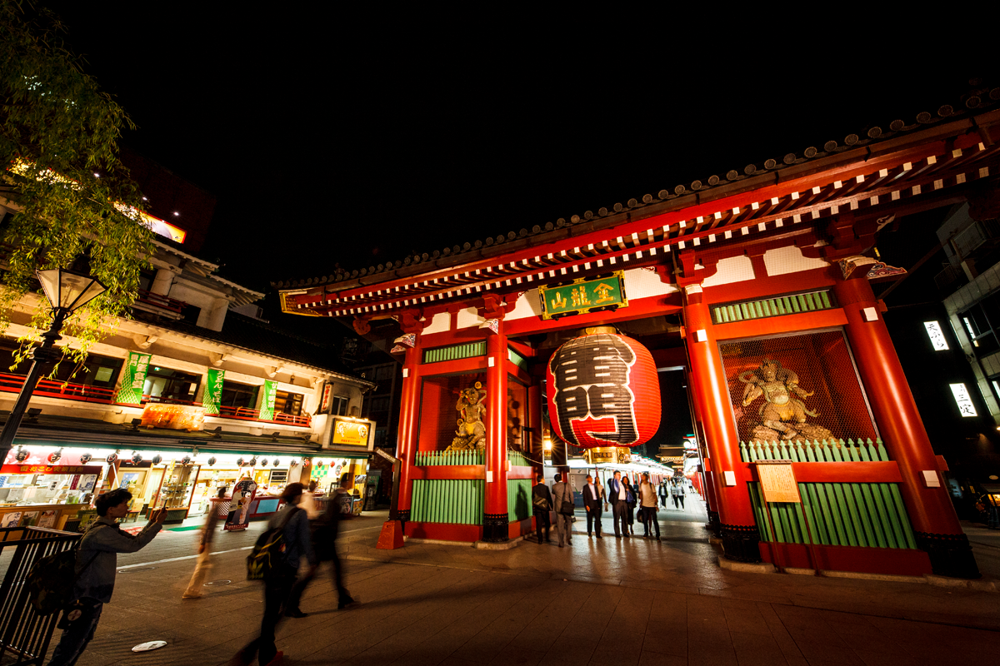
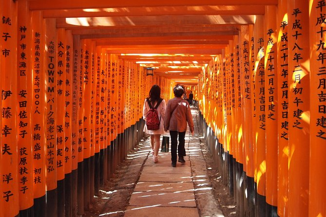
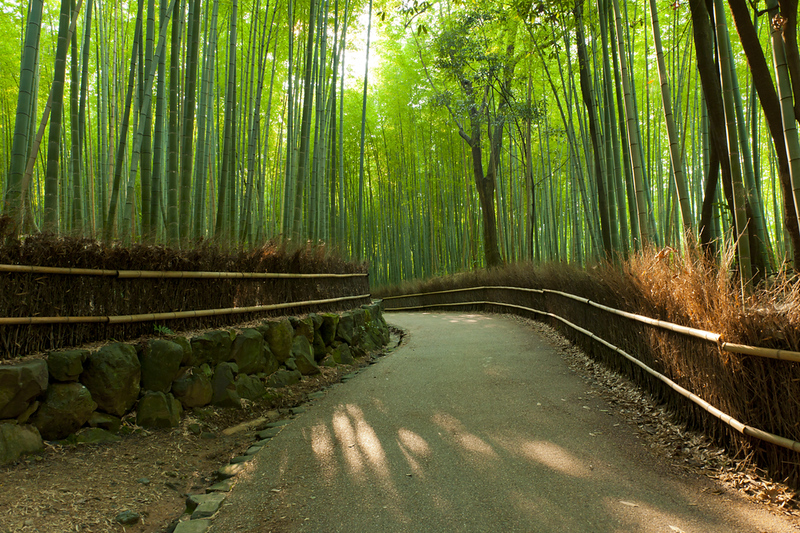
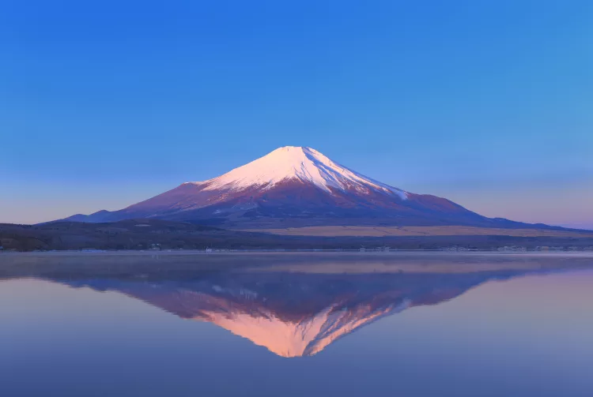
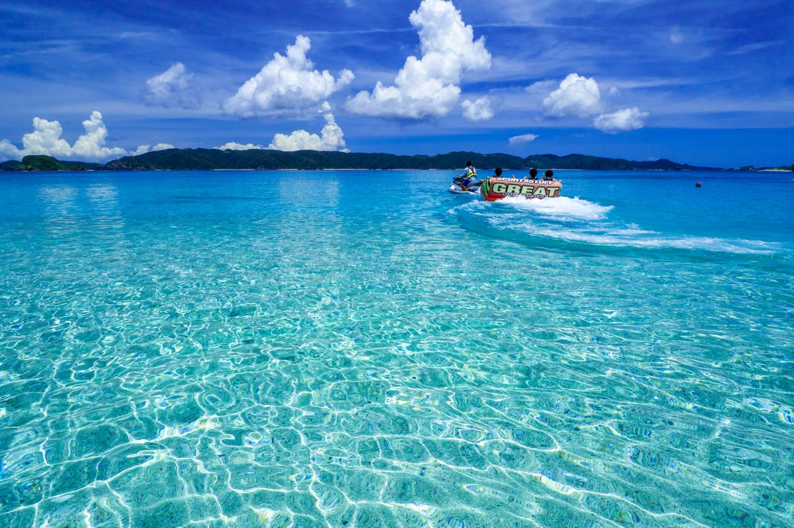
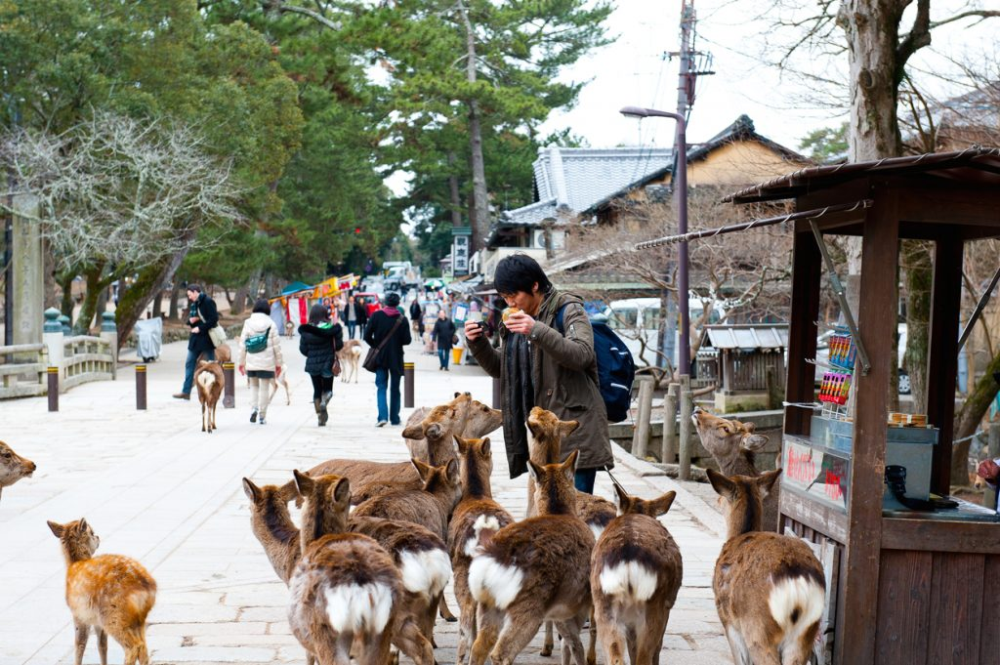
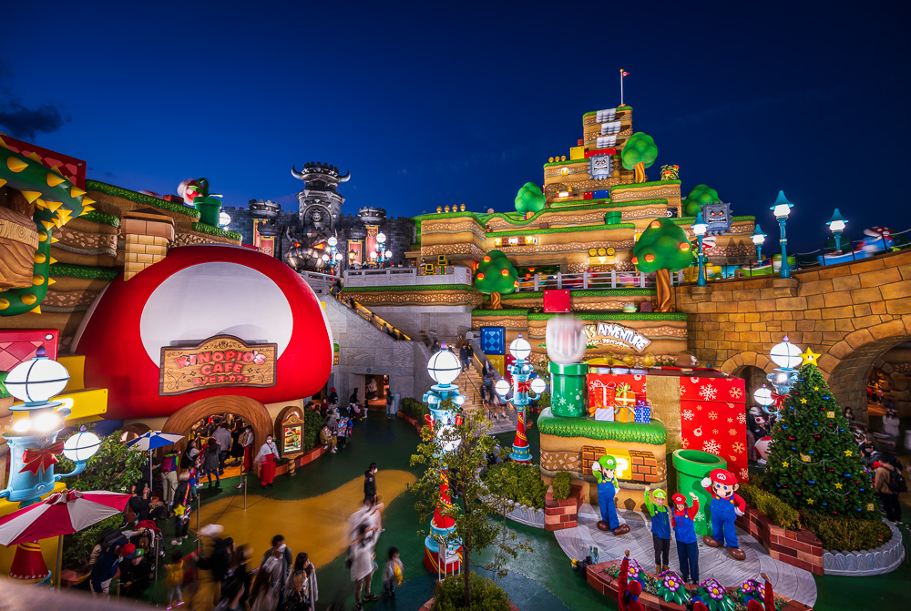
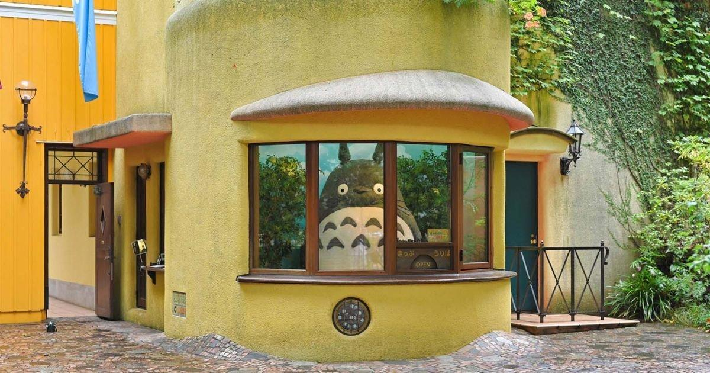

1. Tokyo Tower - Located in Tokyo knowns as the iconic
red tower with stunning city
views.

2. Senso-ji Temple - Located in Asakusa,
Tokyo.
It is Tokyo’s oldest and most famous temple.

3. Fushimi Inari Shrine - Located in Kyoto.
Walk through thousands of bright orange
torii gates.

4. Arashiyama Bamboo Grove - Located in Kyoto.
It is a peaceful path surrounded by
towering bamboo.

5. Mount Fuji - Located in Shizuoka. It is
Japan’s highest mountain and national
symbol.

6. Okinawa Beaches - Relax in crystal-clear
waters on Japan’s tropical islands.

7. Nara Park - Meet friendly deer and visit
the giant Buddha at Todai-ji Temple.

8. Universal Studios Japan - Located in
Osaka. Fun theme park with thrilling rides
and themed areas like Super Nintendo
World, The Wizarding World of Harry
Potter, and Minion Park.

9. Ghibli Museum - Located in Mitaka, Tokyo.
This whimsical museum showcases the art
and creativity behind beloved films like
Spirited Away and My Neighbor Totoro.

10. Osaka Castle - A grand historical
landmark surrounded by scenic gardens.